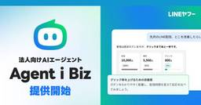
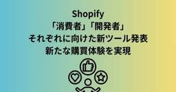
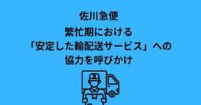
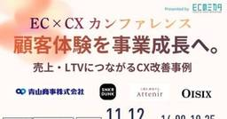
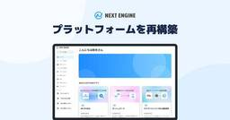
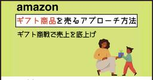

ECのミカタ
https://ecnomikata.com
ネットショップ運営を支援するビジネスポータル「ECのミカタ」。手間をかけずに、貴社ネット通販事業の収益性・業務効率性を高めるヒントを手に入れることが出来ます。
フィード
LINEヤフー、「LINEヤフー BIZ Conference 2026」にて顧客体験の主な進化を発表
ECのミカタ
LINEヤフー株式会社は2026年10月27日、法人向けイベント「LINEヤフー BIZ Conference 2026」を開催した。
1日前
ショッピージャパン、「10.10 Mega Day」にて日本越境セラーが好調な販売実績を記録
ECのミカタ
ショッピージャパン株式会社は2026年10月27日、日本の越境セラーが「10.10 Mega Day」で好調な販売実績を記録したと発表した。
2日前
メルカリ、「グローバルアプリ」の累計登録者が100万人を突破 越境取引における購入体験を拡充
ECのミカタ
株式会社メルカリは2026年10月27日、世界共通アプリ「メルカリ グローバルアプリ」（以下、グローバルアプリ）において、購入体験における安心面の強化と選択肢拡大の両面から、越境取引における購入体験の拡充を進めることを発表した。
2日前

LINEヤフー、法人向けAIエージェント「Agent i Biz」提供開始
ECのミカタ
LINEヤフー株式会社は2026年10月27日、広告や販促など日々の運用を支援する「Agent i Biz」の提供を開始した。※ビジネスマネージャーに関する一定の利用条件を満たすことで利用可能
2日前
佐川急便、「お荷物問い合わせサービス」再開および個人情報の流出に関する調査状況を公開【第5報】
ECのミカタ
佐川急便株式会社は2026年10月23日、必要なセキュリティ対策と安全性の確認を経て、停止していた「お荷物問い合わせサービス」を再開したと発表した。
2日前
「認知施策、どれもしっくりこない」の正体は“意志の不在”だった！ 獲得型DtoCのHRCが全5ブランドのBrand Identityを言語化した理由
ECのミカタ
獲得型広告で成長してきたDtoC事業者の多くは、ある段階で「そろそろ認知施策も必要だ」というフェーズにたどり着く。しかし、施策を打っても判断軸はCPAやPV数のままで、手応えを感じられないケースもあるだろう。インナーウェアの「VIAGE」「LUNA」「TOLETTY」「emmerday!」、デリケートゾーンケアアイテムの「laugh.」という5ブランドを展開する株式会社HRCは、その原因を施策ではなく「ブランドの意志がないこと」と捉え直し、全ブランドでBrand Identityを策定した。その結果、組織と現場で何が変わったのだろうか。意志を起点に100年続くブランドを創る支援を行う株式会社NineCraft 代表の鄭氏と、HRC 経営企画室の川田氏に話を聞いた。
2日前
ネット専用スーパー「Green Beans」、エージェンティック・コマースの実装を推進
ECのミカタ
イオンネクスト株式会社は2026年10月22日、運営するネット専用スーパー「Green Beans」において、Google CloudのAIの技術を活用した「エージェンティック・コマース」の実現に向けた取り組みを進めることを発表した。
2日前
Meta、パーソナルAIエージェント「Muse」を日本で開始 北米以外で初の提供
ECのミカタ
Metaは2026年10月23日、パーソナルAIエージェント「Muse」を日本での提供開始を発表した。なお、日本は9月に先行して提供を開始した北米以外では、初の提供地域となる。
3日前

Shopify、「消費者」「開発者」それぞれに向けた新ツール発表 新たな購買体験を実現
ECのミカタ
Shopify Japan株式会社は2026年10月22日、消費者や開発者がAIエージェントにショッピング機能をより簡単に取り入れられる新たなツール「shop.md」および「shop.dev」を発表した。
3日前

佐川急便、繁忙期における「安定した輸配送サービス」への協力を呼びかけ
ECのミカタ
佐川急便株式会社は2026年10月20日、繁忙期における安定した輸配送サービスの継続に向け、荷主に協力を呼びかけた。
3日前
国内発送＋出店費不要で「壁」を乗り越え、いざ「POIZON」で6億人市場へ！
ECのミカタ
国内ECで培った商品力や調達力を、海外でも生かしたい――。グローバルな販路拡大を考える事業者にとって、中国は気になる市場の一つだろう。一方で、言語や物流、顧客対応への不安から、越境販売に踏み出せないケースも考えられる。そうした越境EC特有のハードルを下げ、中国市場へのリーチを可能にするのが、ファッション・アパレル領域に強みを持ち、会員数約6億人を抱える中国発のECプラットフォーム「POIZON」だ。現地のニーズをしっかりと捉えながら、既存のEC業務に無理なく組み込める販売手段を選ぶには何を知るべきか。日本の事業者のPOIZON参入を支援するPOIZON JAPAN株式会社のRei（庄戦穎）氏に聞いた。
3日前

【11/12渋谷・無料】EC売上・LTVアップの打ち手！ 青山商事、スニダン、アテニア、Oisixらが「顧客体験の向上」実践事例を公開
ECのミカタ
EC事業を成長させるには「新規顧客の獲得」「購入率の改善」「リピート購入の促進」など、さまざまな施策が不可欠。そして、これらはどれか単体で解決する課題ではない。ユーザーが商品を見つけてから購入までの導線の整備、不安やストレスの解消、購入後のコミュニケーション……。これら一つひとつに売上やLTVアップにつながるポイントが潜んでいる。そこで、ECのミカタでは11月12日、ECにおける「顧客体験（CX）の改善」をテーマにしたカンファレンスを開催。青山商事、SODA（SNKRDUNK：スニーカーダンク）、アテニア、Oisixなどが登壇。各社が事業成長につなげるために、顧客との接点をどのように捉え改善してきたのか、実際の取り組みを紹介する。●参加費：無料 ●対象：EC事業者、EC出店を検討している事業者▼イベント詳細・申し込みはこちらからhttps://ecnomikata.com/lp/2026-nov-cx/
3日前
「au PAY マーケット Salon」がリニューアル、システムやUI／UXを刷新
ECのミカタ
auコマース&ライフ株式会社は2026年10月20日、「au PAY マーケット Salon」を9月28日にリニューアルしたことを発表した。
3日前

NE、「ネクストエンジン」のアプリストアをAI時代に向けて再構築
ECのミカタ
NE株式会社は2026年10月20日、SaaS型ECバックエンドシステム「ネクストエンジン」のアプリストアを、6700社超のEC事業者の利用実績と評価を蓄積するプラットフォームへ再構築したことを発表した。※本記事で紹介する改修は、システム調整のため実施が延期されている。
4日前
お酒のオンライン購入の障壁「送料」と「実物・味への不安」 シナブル調査
ECのミカタ
株式会社シナブルは2026年10月21日、「酒類の購買行動と実店舗・オンラインの比較」に関する調査の結果を発表した。
4日前
Recustomer、返品時に「ショップ専用残高」で返金を受け取れる機能を提供
ECのミカタ
Recustomer株式会社は2026年10月14日、返品時の返金方法として、そのショップで次の買い物に使える残高を選べる「ストアクレジット返金」機能の提供を開始した。併せて、生活者調査の結果も発表した。
4日前

【簡単解説】Amazonでギフト商品を売るアプローチ方法 ギフト商戦で売上を底上げ【アグザルファ】
ECのミカタ
こんにちは！国内初のAmazon専門コンサルサービスを展開しているアグザルファです！少しずつクリスマスシーズンが近づいてきました。Amazonで販売をしていると、年末の「ギフト需要」は年間でも売上の大きな山場だと実感している出品者の皆様も多いはずです。では、Amazon出品においてギフトシーズンに向けての対策はどのような準備や工夫が必要になるのでしょうか。本記事では、商品ページにおけるギフト商材の効果的な訴求方法を中心に、Amazon専門コンサルタントがわかりやすく解説いたします！
4日前
ジールス、ECに特化した「Omakase AI電話 for EC」を提供開始
ECのミカタ
株式会社ZEALS（以下、ジールス）は2026年10月14日、EC事業特有の問い合わせや各種手続きに対応する「Omakase AI電話 for EC」の提供を開始した。
4日前